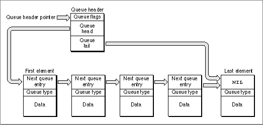
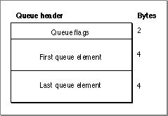
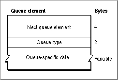
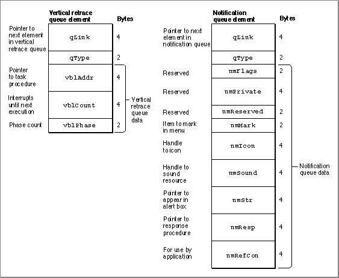

About Queues
The Macintosh Operating System uses operating-system queues to keep track of a wide variety of items, including VBL tasks, notifications, I/O requests, events, mounted volumes, and disk drives (or other block-formatted devices). A queue is a list of identically structured entries linked together by pointers. A single entry in a queue is called a queue element. Figure 6-1 illustrates the general structure of an operating-system queue.Figure 6-1 An operating-system queue

As you can see, the addresses of the first and last elements in the queue are stored in a queue header. The queue header also contains some queue flags, which contain information about the queue.
Each queue element contains the address of the next element in the queue (or the value
NILif there is no next element), an indication of the type of queue to which the next element belongs, and some data. The exact format and size of the data differs among the various queue types. In some cases, the data in the queue element contains the address of a routine to be executed. Table 6-1 on page 6-7 lists the different types of operating-system queues used by the Macintosh Operating System.The Queue Header
The queue header is the head of a list of identically structured entries linked together by pointers. Figure 6-2 shows the format of a queue header.Figure 6-2 The format of a queue header

A queue header is a record defined by a data structure of type
QHdr, which contains three fields: flags, a pointer to the first element in the queue (qHead), and a pointer to the last element in the queue (qTail). The flags field contains information specific to each queue. Ordinarily, these flags are for use by the system software only, and your application should not need to read or manipulate these flags. TheqHeadfield is a pointer to the first element in a queue, and theqTailfield is a pointer to the last element in a queue. If the queue has no elements, both of these fields are set toNIL.Thus, if you have access to a variablemyQueueHdrof typeQHdrPtr, you can access the corresponding first queue element of a non-empty queue withmyQueueHdr^.qHead^and access the last element withmyQueueHdr^.qTail^.Each queue element itself is a record of type
QElem, which is described in the next section.The Queue Element
The exact format of a queue element is not the same for all types of operating-system queues; thus, a queue element is defined by a variant record that is a data structure of typeQElem. Figure 6-3 shows the format of a queue element.Figure 6-3 The format of a queue element

Each queue element contains two fixed fields: a pointer to the next element in the queue (
qLink), a value describing the queue type (qType), and a variable data field specific to each queue type.The
qLinkfield contains a pointer to the next element in the queue. All queue elements are linked through these pointers. Each pointer points to theqLinkfield in the next queue element, and the last queue element contains aNILpointer. The data type of the pointer to the next queue element is alwaysQElemPtr.The
qTypefield contains an integer that usually designates the queue type; for example,ORD(evType)for the event queue. Table 6-1 contains a list of all the supported operating-system queue types.Table 6-1 Table 6-1 Operating-system queue types
Often, you need to set the
qTypefield of a queue element to an appropriate value before installing the queue element. However, some operating-system queues use this field for different purposes. For example, the Time Manager uses an operating-system queue to track Time Manager tasks. In the high bit of this field, the revised Time Manager places a flag to indicate whether a task timer is active. The Time Manager (along with other parts of the Operating System that use this field for their own purposes) shields you from the implementation-level details of operating a queue. Indeed, there is no way for you to access a Time Manager queue directly, and theQElemdata type does not support access of Time Manager task records from Time Manager queue elements.The third field contains data that is specific to the type of operating-system queue to which the queue element belongs. For example, a queue element in a vertical retrace queue, maintained by the Vertical Retrace Manager, includes information about the task procedure to be called, the number of interrupts, and the task phase. A queue element in a notification queue, maintained by the Notification Manager, includes information about the alert box, the sound response, the item to be marked in the Application menu, a response procedure, and some reserved values. Figure 6-4 shows the format of these two different types of queue elements.
Figure 6-4 Formats of a vertical retrace queue element and a notification queue element

Figure 6-4 illustrates how the format and size of an operating-system queue element can vary because of the variable data field. For example, an element of type
vType(a vertical retrace queue element) uses 10 bytes for VBL-specific data, whereas an element of typenmType(a notification queue element) uses 30 bytes for notification-specific data. All operating-system queue elements use at least 6 bytes: 4 bytes to store a pointer to the next element in the queue and 2 bytes to store a value indicating the queue type.